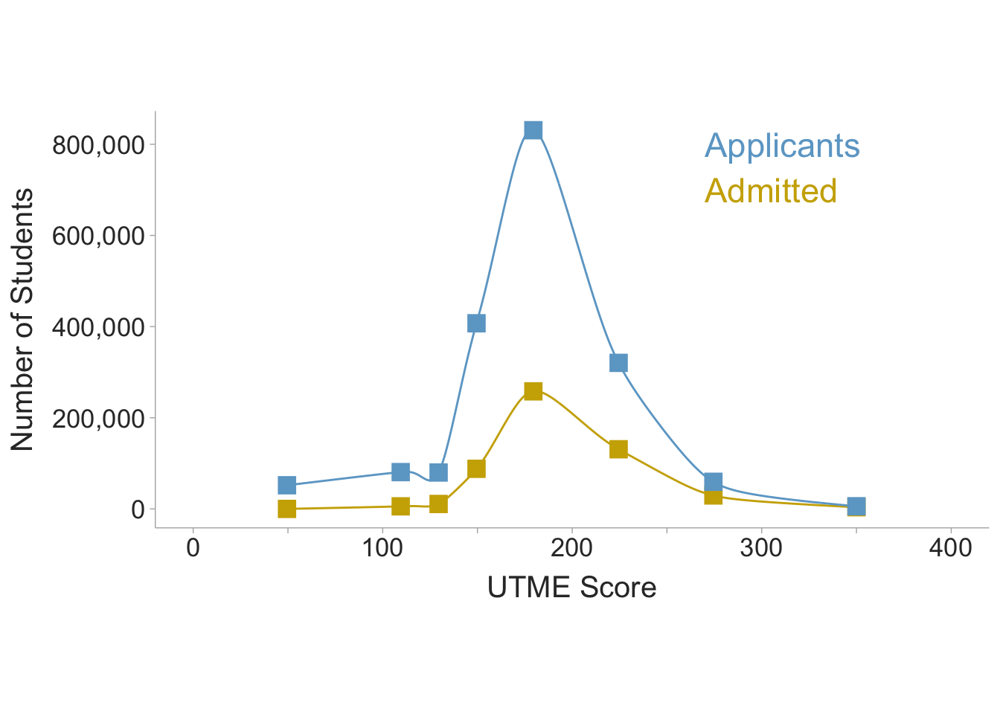

Methodology
A lot of the methodology described below is described further in Hunter and Schmidt (1990), Wiernik and Dahlke (2020), and Jané (2023).
Defining the Estimand
The estimand is our quantity of interest. In the current meta-analysis, we want to estimate the correlation between UTME scores and college academic performance among applicants in Nigeria. Academic performance can be noisily measured by final cumulative GPA (CGPA). Since CGPA contains measurement error and can only be acquired in students who have already been admitted to college, we must apply corrections in order to accurately estimate our estimand.
Accounting for Indirect Range Restriction
Range restriction occurs when the variation of scores within a sample is less than the variation in the population. When students are selected on (partly) the basis of high UTME scores, then the standard deviation within student scores will be less than the total pool of applicants. Therefore we can index the ratio between the standard deviation of UTME scores of admitted students by the total pool of applicants,
\[ u_x = \frac{SD_{\text{admitted}}}{SD_{\text{applicants}}} \]
During the 2023 policy meeting in Abuja, the chief executive of the JAMB registrar, Professor Is-haq Olanrewaju Oloyede, presented data for the scores of the 1.8+ million college applicants that took the UTME in 2022. He also presented the data for students admitted to e. The distributions below are based on the reported scores (scores were presented as number of participants within specified ranges). From the data reported the total pool of applicants had a standard deviation of 41.50. Students admitted to any type of institution had a standard deviation of 36.72. Additionally, The minimum score for universities is 140 while polytechnics and all other colleges have a minimum score of 100 (i.e., polytechnics and colleges of education). Thus removing students below 140, the university student standard deviation shows a standard deviation of 35.16. Therefore based on the data presented, the \(u\)-ratio for polytechnics and colleges of education is estimated as 0.885, whereas universities have a \(u\)-ratio of of 0.847. For this meta-analysis, \(u\)-ratios for each study will be calculated based on the standard deviation of UTME scores within their sample divided by the standard deviation for the entire pool of applicants \(u_x=SD_{\text{sample}}/SD_{\text{applicants}}\) \(=SD_{\text{sample}}/41.50\). If the standard deviation is unavailable, then the \(u\)-ratio of .847 will be used for university student samples or .885 for polytechnics, colleges of education, or if the study does not specify which type of institution.
Since indirect range restriction attenuates correlations, we will want to correct the correlation between UTME scores and final cumulative GPA (CGPA). Each correlation in the meta-analysis, will be computed within a sample of students already admitted to college. Since the purpose of admissions tests, such as the UTME, are to draw inferences and make admissions decisions among the total pool of applicants, the correlation in the restricted sample of admitted students will under-estimate the true predictive validity. Using the \(u\)-ratio for UTME scores (\(u_x\)), we can correct the restricted correlation (\(r_{xY}\)) between UTME scores (\(x\)) and cumulative GPA (\(Y\)), to obtain an estimate of the correlation in the total pool of applicants we can apply the following correction formula:
\[ \hat{\rho}_{xY} = \frac{r_{xY}}{\sqrt{r_{xY}^2 + u^2_x(1-r_{xY}^2)}} \]
Accounting for Measurement Error in the Outcome
Cumulative grade-point averages (CGPA), like any measure, contains measurement error. Let us construct a model for measurement error in the current meta-analysis. A final CGPA is an average of grades across courses and years in the program. An observed final CGPA score, \(Y\), can be modeled as an average of \(\kappa\) GPAs (\(y_i\)) for each year. Such that,
\[ Y = \frac{1}{\kappa}\sum_{i=1}^\kappa y_i \] For example, if a student obtains a GPA of 3.12 in their first year, 3.03 in their second year, 2.98 in their third year, and 3.43 in their last year, then they would have a CGPA of
\[ Y = \frac{1}{4}\times(3.12+3.03+2.98+3.43)=3.14. \] If we had an infinite number of years, we could obtain a true CGPA that would be void of measurement error, however, this is not possible therefore we can model the observed GPA as a function of true scores (\(T\)) and error (\(E\)),
\[ Y = T+E. \]
With this measurement error model, we can estimate the reliability of CGPA from the inter-correlations between yearly GPAs.
| GPA 1 (\(y_1\)) | GPA 2 (\(y_2\)) | GPA 3 (\(y_3\)) | GPA 4 (\(y_4\)) | |
|---|---|---|---|---|
| GPA 1 (\(y_1\)) | \(1\) | |||
| GPA 2 (\(y_2\)) | \(r_{y_1y_2}\) | \(1\) | ||
| GPA 3 (\(y_3\)) | \(r_{y_1y_3}\) | \(r_{y_2y_3}\) | \(1\) | |
| GPA 4 (\(y_4\)) | \(r_{y_1y_4}\) | \(r_{y_2y_4}\) | \(r_{y_3y_4}\) | \(1\) |
With the Spearman-Brown prophecy formula, we can calculate the reliability of the composite CGPA from the average of the inter-correlations between yearly GPAs (\(\bar{r}_{y_iy_j}\), where \(i\neq j\)) and the number of years (\(\kappa\)),
\[ r_{YY'} = \frac{\kappa \bar{r}_{y_iy_j}}{1+(\kappa-1)\bar{r}_{y_iy_j}} \]
The correlation between UTME scores, \(x\), and true GPA, can then be estimated with,
\[ \hat{\rho}_{xT} = \frac{r_{xY}}{\sqrt{r_{YY'}}} \]
Full Correction (Measurement Error & Indirect Range Restriction)
We can correct for both range restriction in UTME scores as well as measurement error in the outcome with the following correction equation:
\[ \hat{\rho}_{xT} = \frac{r_{xY}}{\sqrt{r_{xY}^2 + u^2_x(r_{YY'}-r_{xY}^2)}} \]
Calculating Composite Correlations
Occasionally, some studies will not directly report the correlation between CGPA and UTME scores. Instead, they may report the correlations between UTME scores and each year’s GPA. When this occurs, we can calculate a composite correlation coefficient. Calculating a composite correlation requires the average correlation between yearly GPAs and the average correlations between yearly GPAs and UTME scores. The table below illustrates four yearly GPAs (\(y_i\)) and their inter-correlations as well as the correlations between each GPA and UTME scores (\(x\)).
| GPA 1 (\(y_1\)) | GPA 2 (\(y_2\)) | GPA 3 (\(y_3\)) | GPA 4 (\(y_4\)) | UTME (\(x\)) | |
|---|---|---|---|---|---|
| GPA 1 (\(y_1\)) | \(1\) | ||||
| GPA 2 (\(y_2\)) | \(r_{y_1y_2}\) | \(1\) | |||
| GPA 3 (\(y_3\)) | \(r_{y_1y_3}\) | \(r_{y_2y_3}\) | \(1\) | ||
| GPA 4 (\(y_4\)) | \(r_{y_1y_4}\) | \(r_{y_2y_4}\) | \(r_{y_3y_4}\) | \(1\) | |
| UTME (\(x\)) | \(r_{xy_1}\) | \(r_{xy_2}\) | \(r_{xy_3}\) | \(r_{xy_4}\) | \(1\) |
From the correlation matrix, we can calculate the average inter-GPA correlation (\(\bar{r}_{y_i y_j}\)) and the average UTME-GPA correlation (\(\bar{r}_{x y_j}\)). Then we can calculate the correlation between UTME scores and the composite GPA,
\[ r_{xY} = \frac{\bar{r}_{x y_j}\sqrt{\kappa}}{\sqrt{1+\left(\kappa-1\right)\bar{r}_{y_i y_j}}} \]
This can be done in R using the psychmeta package:
ave_rxyj <- .40
ave_ryiyj <- .85
k <- 4
rxY <- psychmeta::composite_r_scalar(mean_rxy = ave_rxyj,
k_vars_y = k,
mean_intercor_y = ave_ryiyj)
rxY[1] 0.4245959Artifact Correction Meta-Analysis
To aggregate correlations we will use a variation of Hunter and Schmidt’s methodology with the additional use of random-effect weights described by Jané (2023). First step is to correct the observed correlation coefficients for univariate indirect range restriction (in UTME scores) and measurement error (in GPA),
\[ r_c = \frac{r_o}{\sqrt{r_o^2 + u^2_x(r_{YY'}-r_o^2)}} \]
Then we can obtain corrected correlation To do so, we must first calculate the \(n\)-weighted average corrected correlation between UTME and CGPA (\(r_{i}\)),
\[ \bar{r}_c = \frac{\sum^k_{i=1} n_i r_{c_i}}{\sum^k_{i=1} n_i} \]
The sampling error variance of \(r_{c_i}\) can be computed as,
\[ SE^2_{c_i} = \frac{\left(1-r^2\right)^2}{n} \times \left(\frac{r_{c_i}}{r_{o_i}}\right)^2 \]
We can calculate correct the sampling variance random-effect weights with the following formula:
\[ w_i = \frac{1}{SE^2_{c_i} + \left(\frac{\sum^k_{i=1} n_i (r_{c_i}-\bar{r}_c)^2}{\sum^k_{i=1} n_i}-\frac{\sum^k_{i=1} n_i SE^2_{c_i}}{\sum^k_{i=1} n_i}\right)} \]
Using the weights, we can obtain an estimate of the mean true population correlation:
\[ \hat{\bar{\rho}} = \frac{\sum^k_{i=1} w_i r_{c_i}}{\sum^k_{i=1} w_i} \]
Standard errors and confidence intervals for \(\hat{\bar{\rho}}\) are,
\[ SE_{\hat{\bar{\rho}}} = \frac{\sum^k_{i=1} w_i (r_{c_i}-\hat{\bar{\rho}})^2}{k\sum^k_{i=1} w_i} \]
\[ CI_{\hat{\bar{\rho}}} = \hat{\bar{\rho}} \pm 1.96\times SE_{\hat{\bar{\rho}}} \]
Then we can also obtain the standard deviation of true population correlations (i.e., heterogeneity) and the 90% credibility (prediction) interval.
\[ SD_{\rho} = \frac{\sum^k_{i=1} w_i (r_{c_i}-\hat{\bar{\rho}})^2}{k\sum^k_{i=1} w_i} - \frac{\sum^k_{i=1} w_i SE_{c_i}}{k\sum^k_{i=1} w_i} \]
\[ CR_\rho = \hat{\bar{\rho}} \pm 1.645\times SD_\rho \]
References
Hunter, John E., and Frank L. Schmidt. 1990. Methods of meta-analysis: correcting error and bias in research findings. Newbury Park: Sage Publications.
Jané, Matthew B. 2023. “Artifact Corrections for Effect Sizes.” https://matthewbjane.quarto.pub/artifact-corrections-for-effect-sizes/.
Wiernik, Brenton M., and Jeffrey A. Dahlke. 2020. “Obtaining Unbiased Results in Meta-Analysis: The Importance of Correcting for Statistical Artifacts.” Advances in Methods and Practices in Psychological Science 3 (1): 94–123. https://doi.org/10.1177/2515245919885611.